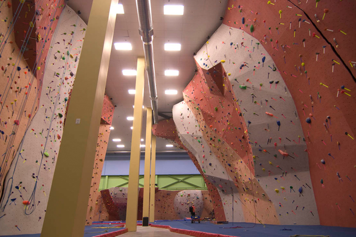
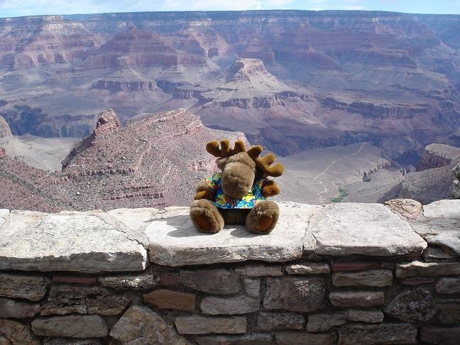
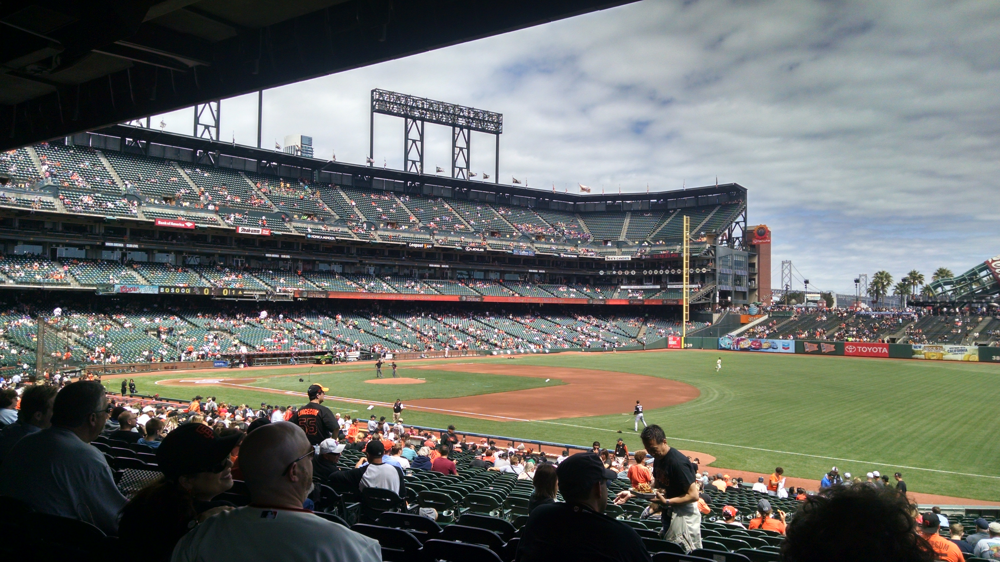

About Me | Portfolio
I recently graduated from a Front-End Web Development course at General Assembly where I learned HTML, CSS, JavaScript, jQuery and how to be an awesome Front-End Web Developer!
During my spare time, I enjoy senior water aerobics, pickling, and spending time with my goldfish, Jerry.
Web Developer, Earth Treks Climbing Center (2015 - present)

Web Developer, Canyon Tours (2010 - 2015)

Web Developer, San Francisco Giants (2005 - 2010)

Front End Web Development, General Assembly (2015)
Bachelor of Science, Computer Science, College of Soft Knocks (2009)
High School Diploma (Honors), School of Hard Knocks (2005)